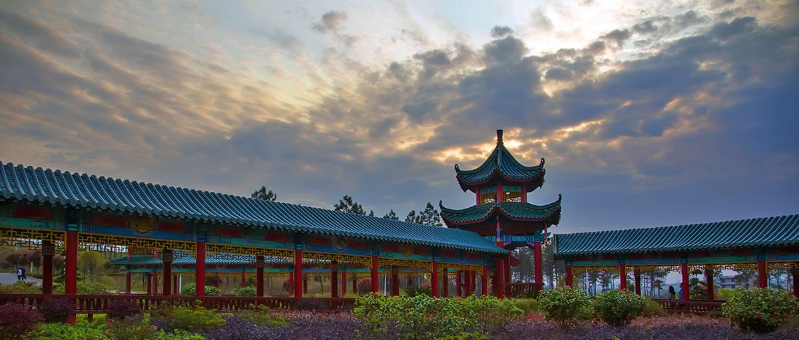

邵东，湖南省辖县级市，由邵阳市代管，别名昭阳，位于邵阳市东部，地势南北崛起，中部抬升，分向东西倾斜；总面积为1768.75平方千米，辖4乡18镇3街道
【邵东一览】
【气候】
邵东市域处亚热带季风区气候温和，四季分明。春多阴雨，夏暑期长，秋多干旱，冬寒期短。年日平均气温 16.6℃。年平均无霜期270天。年平均降水量1150—1350毫米。 [9] 春季时冷时暖，气温变化幅度大，多低温阴雨，间有雷雨大风，夏季暑热期长，气温高，日照多，多雷阵雨，时有干旱。秋季天气晴暖，少雨，昼夜温差大。冬季湿冷、严寒期短，间有霜雪、冰冻。
【历史文化】
1：邵东花鼓戏为省级非遗保护代表性项目。2：清末，邵东有资东书院、稽古书院、杨塘书院三大书院。杨塘书院是邵东一中、邵东三中两所省示范性高中的前身，也是邵东现代教育的发源地之一
【特产】
宝庆猪血丸子，亦称血粑，是邵阳的传统食品，始于清康熙年间，民间历代相传。邵东玉竹，又名尾参。为该市原产地域产品，地理标志产品，玉竹以根入药，性平味甘，具有养阴清热、生津止咳等功效。
【风景名胜】
邵东境内旅游资源有唐代名士申太芝所居之大云山、唐肃宗御笔钦题的佘湖山、宋濂溪周子洗墨（周敦颐）的九龙岭，昭阳候城遗址，畔塘水库烟竹岩、明代建筑群荫家堂、朋山塘古屋、洪桥、水东江长道冲千年古枫群及佘湖山古寺佛地农兴堂的希其坳等。
【昭阳公园】

【贺绿汀故居】
【注】：贺绿汀，是中国著名作曲家、音乐家。